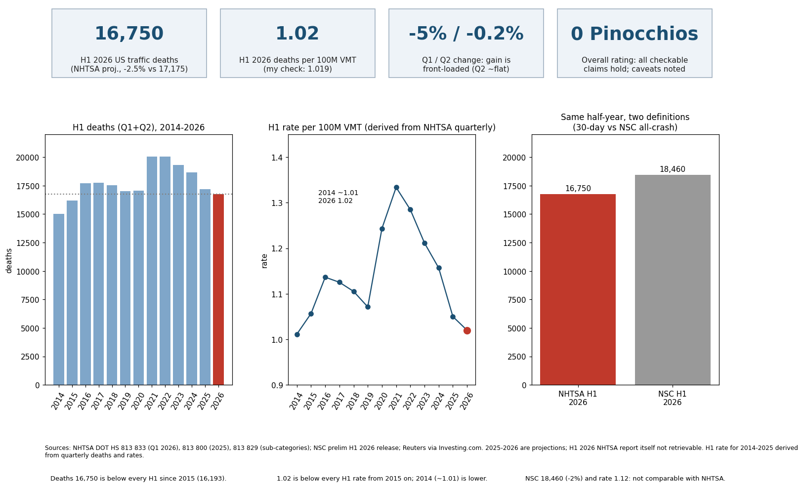

Every claim I could test against NHTSA primary documents checks out. The headline numbers (16,750 deaths in January-June 2026, down 2.5% from 17,175; rate 1.02 per 100 million vehicle miles) are internally consistent with NHTSA's published quarterly series and my own recomputation. Rating: 0 Pinocchios (one could argue a "half" for framing, but nothing is false).
| Claim | Verdict | Evidence |
|---|---|---|
| H1 2026 deaths 16,750, -2.5% from 17,175 | Supported (consistency) | Baseline matches 813 833; secondary reports of NHTSA release |
| Rate 1.02, lowest since 2014 | Supported (recomputed 1.019) | 813 833 Table 1/2 VMT and rates |
| Q1 -5%, Q2 -0.2% | Plausible, not directly verified | Q1 was -4.3% in July estimate; arithmetic reproduces total |
| Fifth straight yearly decline | Supported | 2022 -1.2%, 2023 -4.0%, 2024 -4.3%, 2025 -6.7% |
| 2025 lowest since 2019; rate 1.10 second-lowest ever | Supported | 36,640 vs 2019 36,355; 813 800: behind only 1.08 in 2014 |
| Bicyclist deaths +4% to 1,148 in 2025 | Supported | 813 829 table: 1,103 to 1,148, +4% |
| Bicyclist deaths 40+ year high in 2023 | Not independently verified | Carscoops repeats; NHTSA text not read |
| 2021 deaths +10.8% to 43,230, most since 2005 | Supported (+10.8%, 43,230); "since 2005" from memory-free table only to 2014 | 813 833 Table 1 |
| $30B taxpayers, $340B societal, $1.37T with quality of life | Supported ($340B, $30B); $1.37T consistent with "nearly $1.4T" | NHTSA DOT HS 813 403 (2019 data, 2023) |
Answer: NHTSA series reproduces the article's baseline and rate. Key values: H1 deaths 2014 15,035; 2015 16,193; 2025 17,175; 2026 16,750. Confidence: medium-high; the exact H1 2026 report was unavailable.
NHTSA uses 30-day deaths and projections revised later; the 2025 and 2026 values are not final FARS counts. A 2026 H1 rate from NSC (1.12) is a different measure. No missing-year interpolation was used; H1 rates for 2014-2025 are derived from quarterly deaths and rates.